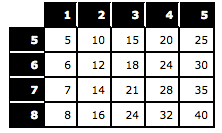

Please input the following four integers on the right form:
These four numbers will be used to calculate the row and column of the multiplication table.
Note that the numbers that go along the side of the table and those that go along the top (the multiplier and the multiplicand) are arbitrary. The point of this assignment is for you to create a program that can display the table given any arbitrary starting and ending numbers for the multiplier and multiplicand. The human factors part of this assignment is that there are many interesting things that can happen when users enter the four numbers, and we will discuss those in class.
Here is an example:
